| ID | Issue | Owner | Next step |
|---|---|---|---|
| AISS-01 | Latency misses | Long, Guruprasath | Trace the unexplained 35–80 s |
| AISS-02 | Direct API URL, no WAF | Guruprasath | CloudFront-only origin + WAF |
| AISS-03 | Image-only rollback | Ibrahim | Additive migrations tested in CI |
| AISS-04 | Operations hardening | Guruprasath | Ruleset, least-privilege role, alerts |
| AISS-05 | Evidence not established | Long, Guruprasath | Run NOT RUN experiments; read the bill |
| Member | Specialism | Recorded | Forecast |
|---|---|---|---|
| Guruprasath | Cloud and delivery | 11 pd | 12 pd |
| Ibrahim | Backend services | 11 pd | 12 pd |
| Long | Domain, contracts, verification | 11 pd | 12 pd |
| Total | 33 pd vs 31 planned | 36 pd |
| Asked | Answer |
|---|---|
| Exactly-once? | No: at-least-once + inbox + fences |
| CQRS? | Snapshot projection, not full CQRS |
| Event sourcing? | No: event-carried state transfer |
| Message | Direction |
|---|---|
| submit | Media → Processing |
| retry | Media → Processing |
| cancel | Media → Processing |
| work | Processing → Processing |
| result | Processing → Media |


| Gate | Disposition |
|---|---|
| CodeQL | 12 High dismissed with reasons, 0 fixed |
| ZAP (local) | 8 Low + 8 informational |
| FFmpeg CVE-2025-52290 | accepted, unfixed, rationale kept |
| Trivy / ECR | zero fixable HIGH/CRITICAL on candidates |